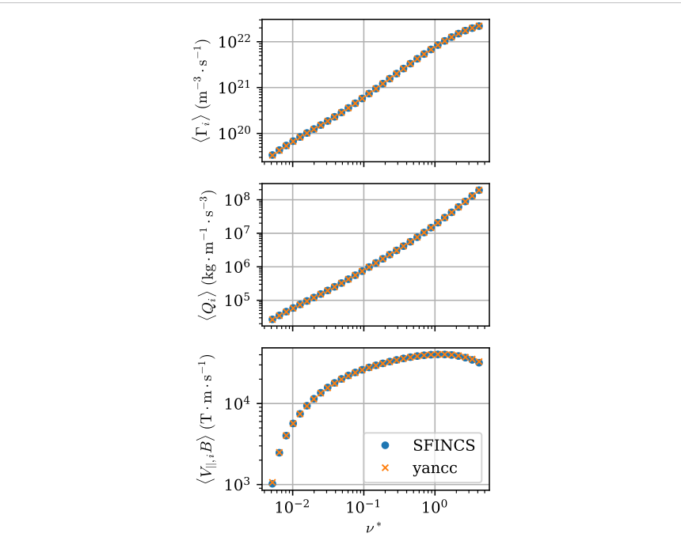
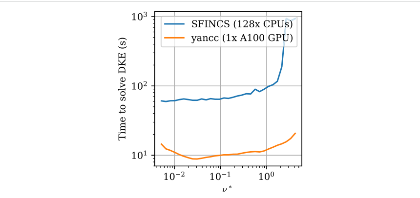

yancc：GPU 上的可微新经典输运
yancc: a GPU-accelerated, differentiable solver for neoclassical transport in tokamaks and stellarators
原文与出版信息 ↗ · 据用户提供版本整理；公式离线预渲染；原图为关键图精选，非全文翻译。
1. 一句话抓住贡献
yancc 把完整、径向局域的四维漂移动理学方程做成适合 GPU 的可微求解器。关键不是把原有稀疏直接求解器搬到 GPU，而是联合设计离散格式、多重网格预条件和 Krylov 迭代：保留速度耦合、能量散射与物种间碰撞，同时降低反复计算新经典输运的时间和内存成本。
论文提供的是数值方法与代码交叉验证，不是新经典输运理论的新推导，也不是实验验证。正文页码从期刊正文第 1 页起算；上传 PDF 另有一页出版社封面。
2. 从分布函数到可测输运量
以小归一化回旋半径为展开参数，令 ，且 。径向局域近似舍去扰动分布在相邻磁面之间的耦合，因此未知量只依赖磁面上的两角坐标、归一化速度 与俯仰角 。注意论文的 是磁面标签，不是回旋半径。（第 2–3 页）
平行运动和电漂移构成对流；碰撞只在速度空间提供扩散。驱动项来自密度、温度与电势梯度，以及磁面平均平行电场。线性化碰撞算子同时包括测试粒子和场粒子部分：
改变俯仰角， 处理能量散射， 通过 Rosenbluth 势描述背景扰动的反馈。仅保留俯仰角散射的单能近似把问题降为三维，但不能等同于完整的多物种能量与动量交换。yancc 两种形式都能求解，比较性能时必须先确认比较的是哪一种。（式 9–19、33–40）
解出的 不是最终目标，取矩才得到输运与电流：
同样在积分中加入动能可得论文定义的热通量，加入平行速度可得流。仿星器通常需要进一步求 才能确定双极径向电场；任意指定电场的单次输运计算还没有完成这一自洽条件。（第 4–5 页）
3. 为什么这个方程难算，方法怎样逐项应对
难点一：强对流、封闭特征线与狭窄边界层。低碰撞率下俘获区之间的边界层需要高角分辨率；碰撞对实空间没有直接扩散。周期边界与回返轨道也意味着不能简单从“入流边界”向内部扫掠已知解。作者在三个角坐标用有限差分，在速度上用带 Maxwell 权重的多项式，后者通常只需 5–10 个点。（第 6–8 页）
主算子采用四阶、预条件采用二阶迎风格式，并使用加宽模板提高相对对角强度。例如二阶模板从 改成 ，对角占优比由 0.60 增至 0.88；四阶由 0.24 增至 0.62。它们仍不满足比值大于 1 的严格对角占优，不能把“提高对角占优性”读成数学保证。迎风数值扩散改善稳定性，却使粗网格偏离真实低碰撞率问题，这是后续算法取舍的来源。（表 1）
难点二：离散碰撞算子必须保持耗散性质。速度能量散射直接配点可能产生伪反耗散模式，尤其不同物种热速度相差很大时。作者改用弱形式，积分分部后构成质量矩阵 和刚度矩阵 ：
等温情况下 正定、 半正定，故离散能量散射是耗散的；非等温情况本文报告的是经验上仍然稳定，不能把等温证明直接推广为所有温比下的定理。（式 51–54）
难点三：百万至千万未知量不能依赖大规模稀疏分解。多重网格只粗化角坐标，保留较小的速度网格；依次在不同坐标方向使用块对角平滑器。粗网格直接重新离散，避免存储完整细网格矩阵。完整 DKE 优先用 V-cycle；单能问题在测试中用更高循环指数更高效。（第 9–12 页）
纯多重网格仍可能留下不衰减甚至增长的误差模，所以最终采用右预条件 GCROT，内部 GMRES 最多 150 次后重启并保留重要子空间。这里“多重网格有效”指它构成优秀预条件，不代表单独迭代无条件收敛。
4. 结果要按问题、硬件与误差量分别看
| 验证问题 | 主要证据 | 不能省略的限定 |
|---|---|---|
| W7-X 单能 DKE | 与 MONKES 比较，输运系数收敛至约 1%；大部分碰撞率区间快 2–4 倍。 | 比较对象是作者在 JAX 中重实现的 MONKES 算法，同用 A100；yancc 占 4 GB，MONKES 占 1.4 GB。最低碰撞率处速度接近，简单几何下 MONKES 可能更快。（第 15 页） |
| NCSX 类单物种密度扫描 | 粒子、热通量与平行流约 1% 一致；通常快约 5 倍，高碰撞率时接近两个数量级；内存约 6 GB 对比超过 50 GB。 | yancc 用一张 A100，SFINCS 用 128 CPU 核；不是同硬件算法纯对照。未计每种分辨率通常小于 30 秒的首次 JIT。（第 16–17 页） |
| 电子—氢双物种电场扫描 | 通量与流总体约 1% 收敛，验证完整物种耦合。 | 平行电流是两个流的差，差异约 5%；“所有输出均小于 1%”不成立。（第 17–18 页） |
| W7-X 多根双极电场 | 42 次 DKE 求解找到离子根、电子根与中间不稳定根。 | 是特定剖面和几何下的示例，不保证任意系统都能发现所有根。（第 18–19 页） |
大长宽比托卡马克基准还揭示一项真实局限：极高碰撞率下，离散平行动量守恒误差会被放大，精确恢复流需要更高速度及俯仰角分辨率。不能只看典型扫描时间平坦，就忽略极限参数中的分辨率成本。（图 4，第 13–14 页）


5. 可微性怎样转化为科研能力
论文用自动微分提供 ，以 Newton 法求双极根，并结合消根、区间包围及必要时二分法。每找到一根，都回到原始电流方程复核，避免只满足变换后方程的数值伪根。
补充理解：若离散问题为 ，对参数 求导得到
这说明几何或剖面变化的灵敏度可通过另一个线性问题求得，而不必对每个参数盲目扰动重跑。此式是帮助理解可微求解的补充推导，不是本文新增物理方程。梯度优化、在线输运耦合和不确定性分析是明确应用方向，但本文没有完成全反应堆优化或实验剖面预测验收。
6. 适用边界与阅读自检
完整“四维”不等于完整“五维”或全局轨道：径向局域、小回旋半径展开仍然存在。强电场、近准对称大流、切向漂移及磁面内电势变化的扩展列在未来工作，尤其杂质输运不能默认已覆盖。速度优势应解释成特定离散、预条件与硬件组合的结果，而不是 GPU 对所有新经典代码的一般胜利。（第 19–20 页）
- 为什么只在速度空间有扩散，会让极低和极高碰撞率都形成数值困难？
- 为什么两个平行流各自约 1% 的误差，可以对应更大的净平行电流相对误差？
- 若把 yancc 放入线圈或磁面优化，除了梯度可用，还需要核查哪些物理近似与分辨率收敛？